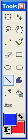

The Line Tool (Tools-->Line) operates very similar to the Pencil Tool. The main difference being is that the Line Tool can use multiple widths and different drawing styles. Also, unlike the Pencil Tool, the Line Tool doesn't draw a continuous path -- just a simple line from one point to another.

Pictured to the left is an example of multiple line widths and drawing patterns. The line tool is very versatile.